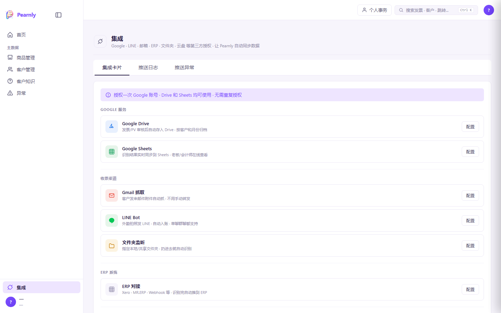
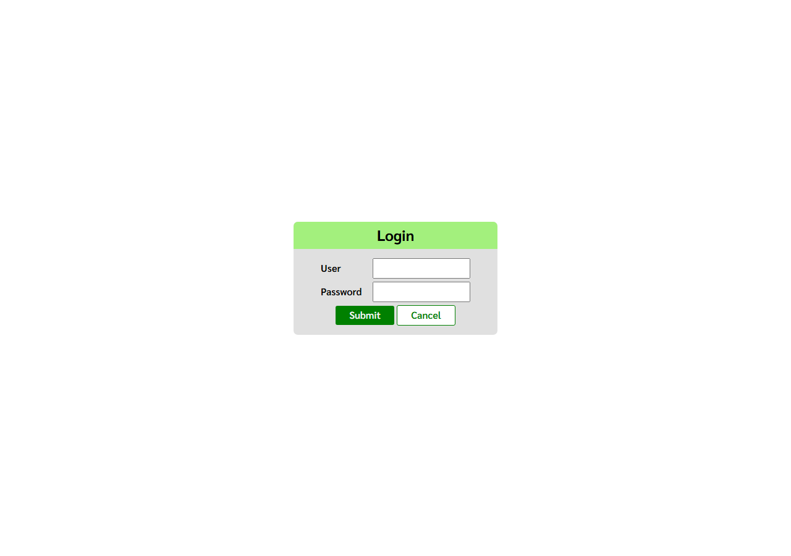
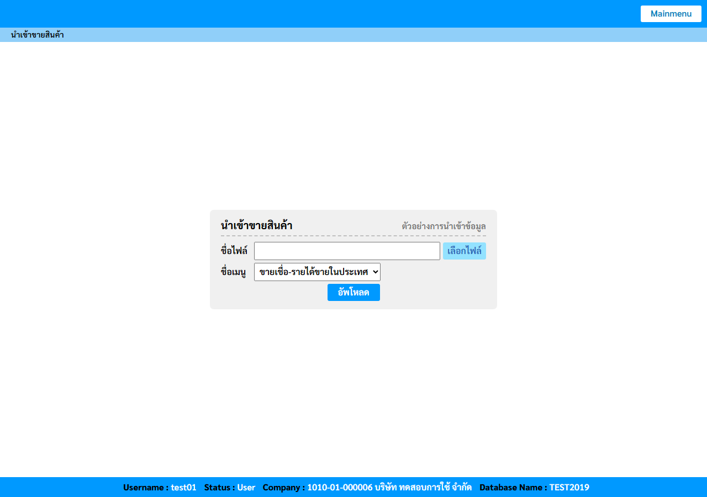
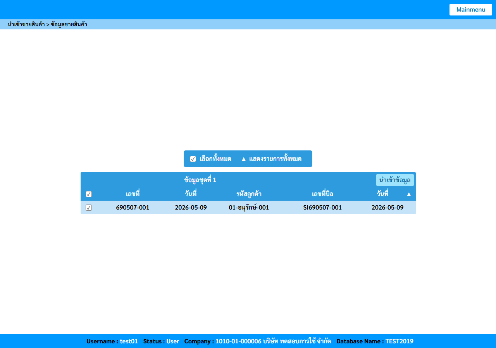

Pearnly จะใช้ระบบอัตโนมัติ (Playwright) ล็อกอิน MR.ERP, สร้างไฟล์ Excel, อัปโหลด และยืนยันให้เองทั้งหมด · Pearnly 用自动化程序(Playwright)替你登录、生成 Excel、上传、确认,全程自动。

เหมาะถ้าไม่อยากเก็บรหัส MR.ERP ไว้ในระบบ · Pearnly สร้างไฟล์ให้ คุณนำไปอัปโหลดเองที่ MR.ERP · 不想把 MR.ERP 密码存系统时用 · Pearnly 出文件,你自己上传。



| อาการ / 情况 | สาเหตุ + วิธีแก้ / 原因+怎么办 |
|---|---|
| รหัสผ่านผิด 密码错 |
ชื่อผู้ใช้/รหัส MR.ERP ผิด หรือยังไม่กรอก → ไปแก้ที่หน้าตั้งค่า ERP / 去 ERP 设置改账号密码 |
| ไม่รู้จักลูกค้า/สินค้า 客户/商品认不出 |
ลูกค้าหรือสินค้ายังไม่มีรหัสใน MR.ERP → เพิ่มรหัสใน MR.ERP ก่อน หรือเปิด "สร้างอัตโนมัติ" / 先在 MR.ERP 建码,或开自动建 |
| ข้อมูลไม่ครบ 数据不全 |
ใบกำกับยังไม่ระบุลูกค้า / เลขที่ยาวเกิน 18 ตัว / ยอดเป็น 0 → แก้ในใบกำกับก่อน / 先补客户、发票号≤18字、金额≠0 |
| เลขที่ซ้ำ 单号重复 |
ใบนี้เคยนำเข้า MR.ERP แล้ว → ระบบกันไว้ไม่ให้ซ้ำ ถ้าต้องแก้ให้ไปแก้ใน MR.ERP โดยตรง / 已导过,防重复;要改去 MR.ERP 改 |
| MR.ERP ปิดปรับปรุง MR.ERP维护 |
(วิธีที่ 1) ระบบลองใหม่อัตโนมัติ · (วิธีที่ 2) ลองอัปโหลดใหม่ภายหลัง / 方式1自动重试;方式2过会儿再传 |
test01 (บริษัท 1010-01-000006 · ฐานข้อมูล TEST2019) เมื่อ 13 มิ.ย. 2026:
ไฟล์ที่ Pearnly สร้าง (รูปแบบ MR.ERP) อัปโหลดเข้าหน้านำเข้าได้สำเร็จ → ขึ้นหน้าพรีวิว → ไม่มี error · ภาพในคู่มือนี้คือภาพจริงจากการทดสอบ